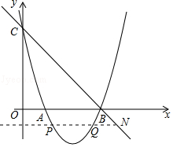

2017年北京市中考数学试题 · 数学解答题 第27题 · 对应解析
27．（7分）（2017•北京）在平面直角坐标系xOy中，抛物线y=x2﹣4x+3与x轴交于点A、B（点A在点B的左侧），与y轴交于点C．
（1）求直线BC的表达式；
（2）垂直于y轴的直线l与抛物线交于点P（x1，y1），Q（x2，y2），与直线BC交于点N（x3，y3），若x1＜x2＜x3，结合函数的图象，求x1+x2+x3的取值范围．
【考点】HA：抛物线与x轴的交点．菁优网版权所有
【分析】（1）利用抛物线解析式求得点B、C的坐标，利用待定系数法求得直线BC的表达式即可；
（2）由抛物线解析式得到对称轴和顶点坐标，结合图形解答．
【解答】解：（1）由y=x2﹣4x+3得到：y=（x﹣3）（x﹣1），C（0，3）．
所以A（1，0），B（3，0），
设直线BC的表达式为：y=kx+b（k≠0），
则 ，
解得 ，
所以直线BC的表达式为y=﹣x+3；
（2）由y=x2﹣4x+3得到：y=（x﹣2）2﹣1，
所以抛物线y=x2﹣4x+3的对称轴是x=2，顶点坐标是（2，﹣1）．
∵y1=y2，
∴x1+x2=4．
令y=﹣1，y=﹣x+3，x=4．
∵x1＜x2＜x3，
∴3＜x3＜4，即7＜x1+x2+x3＜8．

【点评】本题考查了抛物线与x轴的交点．解答（2）题时，利用了“数形结合”的数学思想，降低了解题的难度．